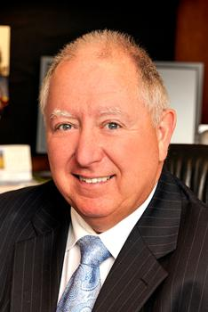
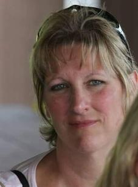
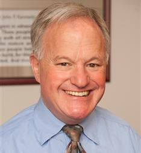
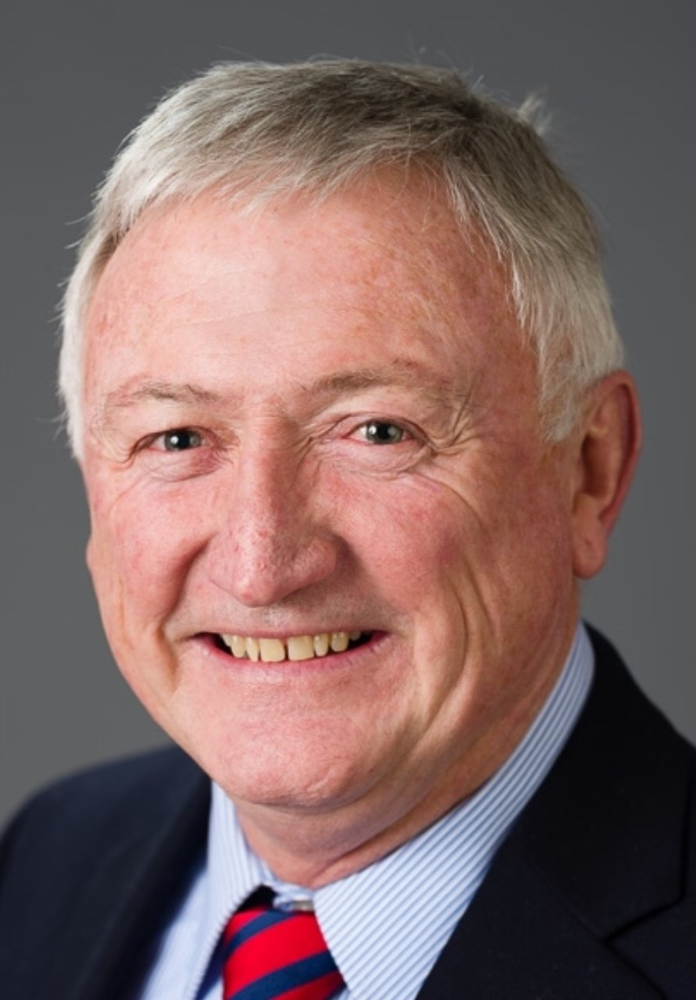

Experience you can trust
Our agents:

Richard is a founding partner of A & B Insurance Group, LLC. Richard worked for over 23 years as an Agent for Farm Family Insurance Company. He is a designated Agricultural & Farming Insurance Specialist and a Life Underwriter Training
Council Fellow. Richard's career has always revolved around farming and horses. Before entering the insurance industry, he worked in management, sales and marketing for various agricultural companies, including A.O. Smith Harvestore,
New Holland Supply and Agway as well as a horse trainer, judge and blacksmith.
In 2009, Richard was selected as a national winner of Newsweek magazine's realLIFEstories Client Service Award for his work with clients effected by the tragedy of 9/11. Click here for more on this Award.
Richard is a graduate of the Essex Agricultural and Technical Institute and the University of Massachusetts Amherst, with a degree in Agricultural Business Management. He currently serves as a Middlesex County Director
for the Massachusetts Farm Bureau Federation, is on the Farm Bureau State Equine Committee, and is a Farm Bureau Horse Farm of Distinction Judge.

A founding partner of A & B Insurance Group, LLC, Wendy Ashe has been an insurance agent since 2003. From 2002 - 2010, Wendy worked for Farm Family Insurance in Littleton, MA. Prior to joining Farm Family, she practiced law as a litigator.
She is a designated Agricultural & Farming Insurance Specialist and Is Certified in Long Term Care insurance.
Wendy has ridden and owned horses for over 37 years and has been a farm owner for over 20 years. She is a graduate of the University of Massachusetts Lowell and Suffolk University of Law.

A & B Insurance Group, LLC owner John Oakes was born and raised in Vermont, where he worked on local farms as a youth and developed a true appreciation and respect for the farming community. He entered the insurance profession in 1995
and has dedicated his career to being an insurance advocate for the local farmer and small business owner. He is also Certified in Long Term Care Insurance. He strives to learn about his clients and how he may be able to help them
keep and grow their businesses.
Prior to joining A & B Insurance in 2011, John worked for Farm Family Insurance in Worcester County, Massachusetts, for many years. He is a graduate of Bryant University.

Specializing in all aspects of farming with an Agricultural & Farming Insurance Specialist (AFIS) Designation.
Former Massachusetts Farm Bureau State Board member and Former President Essex County Farm Bureau. Cliff has farmed all his life formally in Zimbabwe, before moving to the USA in 2002. Not straying from his roots, Cliff still owns a herd beef cattle. He understands the problems farmers face and can help to overcome these difficulties.
Cliff is a member of the Topsfield Agricultural Fair Executive Committee, and in his spare time loves to fish with his wife and two sons.